Where challenges become possibilities.
Students, lecturers, researchers and organisations working together on real challenges in the energy transition.
What we do
Students learn by doing. Working on a real challenge shows them where their knowledge gaps are, and where their learning should start.
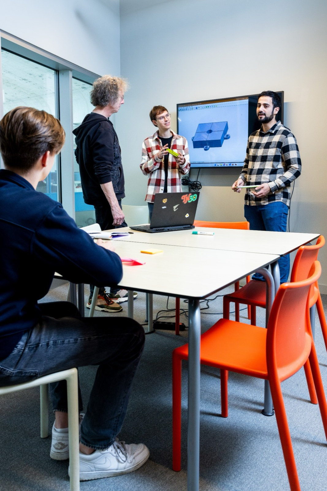
Find your place at FyE.
Whether you teach, run an organisation or just want to know what we do, start here.
How it works
From a real challenge to a real solution.
Instead of learning about the energy transition only in theory, students work on challenges that organisations actually have. Lecturers coach. Professionals share what they know from practice.
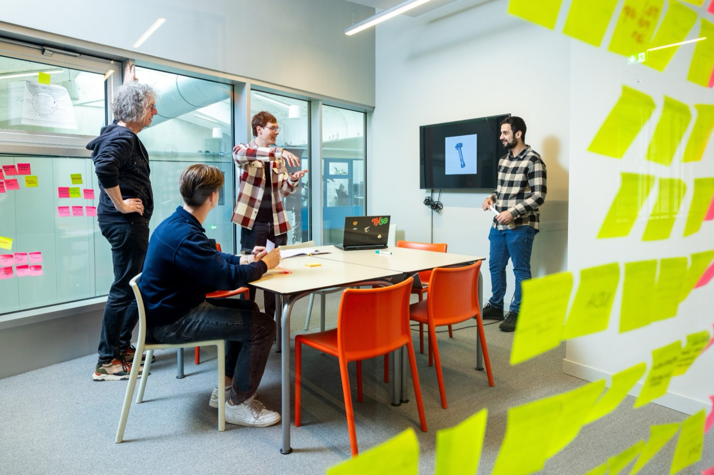
An organisation brings a challenge
A real question from the energy transition, with real constraints and stakeholders.
A mixed team picks it up
MBO, HBO and WO students from different study programmes work on it together.
Lecturers coach the process
Less preparing classes, more helping students find out what they need to know.
Ideas, prototypes and people
The organisation gets fresh perspectives and gets to know possible future colleagues.
Projects
Work that is already happening.
Two partners already bring their challenges into FyE. Here is what that looks like in practice.
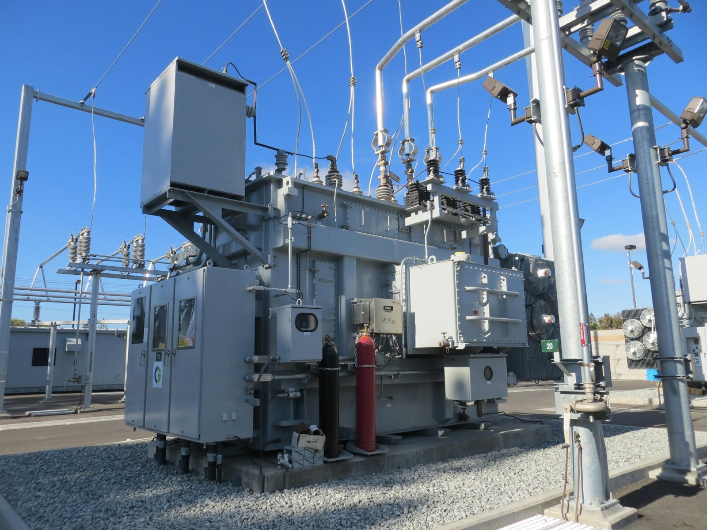
A fresh perspective on neighbourhood energy
How do you make essential energy infrastructure welcome in a neighbourhood?
Read the case →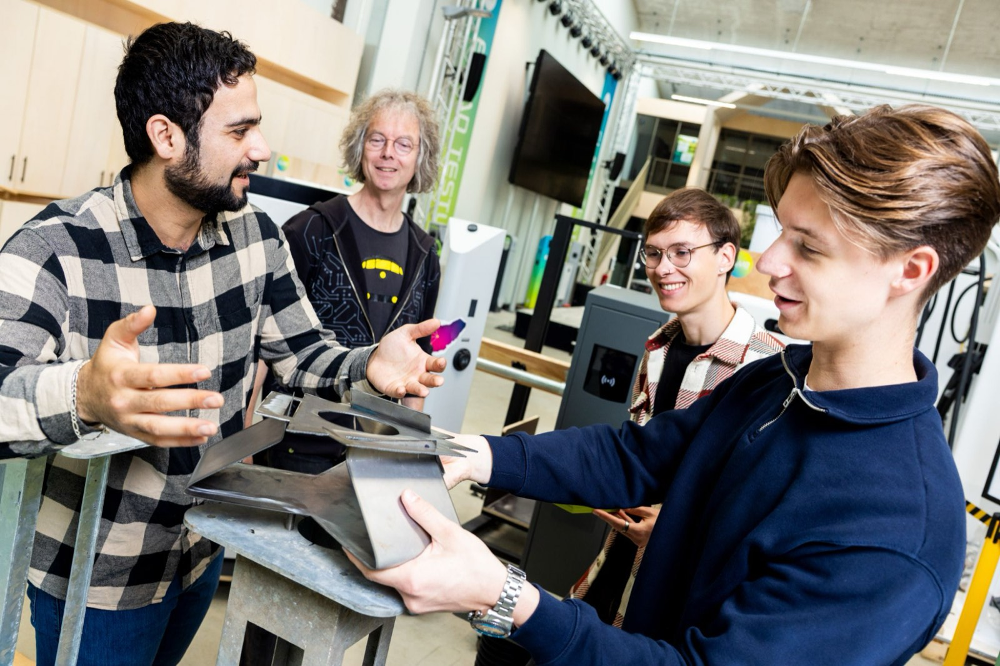
Turning a practical challenge into a working prototype
A charging station needs replacing. Does its foundation have to go too?
Read the case →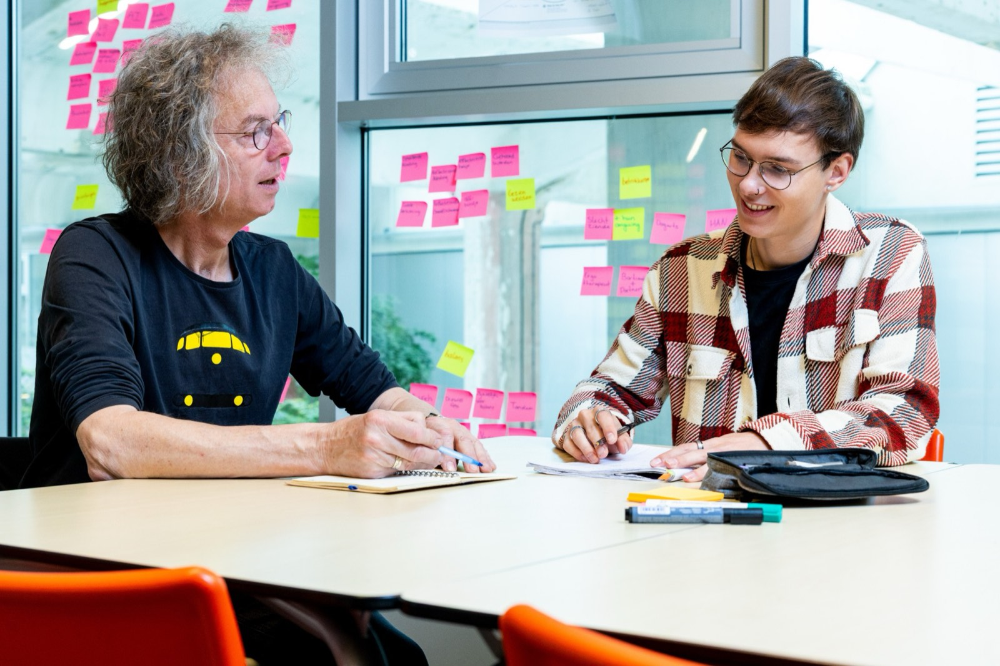
In their words
Future (Y)our Energy helps you find out what you need to know and then start learning.
In their words
Every day that I've spent in the Future (Y)our Energy environment has been unlike the days I spent before in more regular education.
In their words
Students are able, especially in a group, to come up with solutions that people within the company hadn't thought about.
Student voice
Student testimonial goes here.
FyE in numbers
Working together with
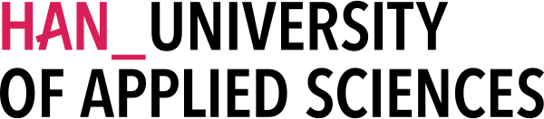
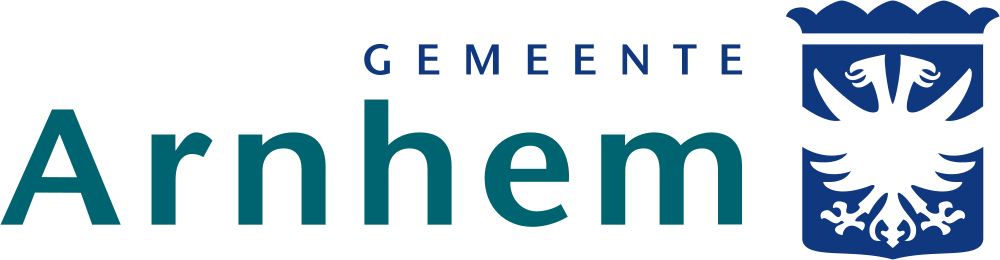
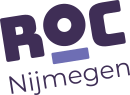
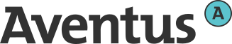
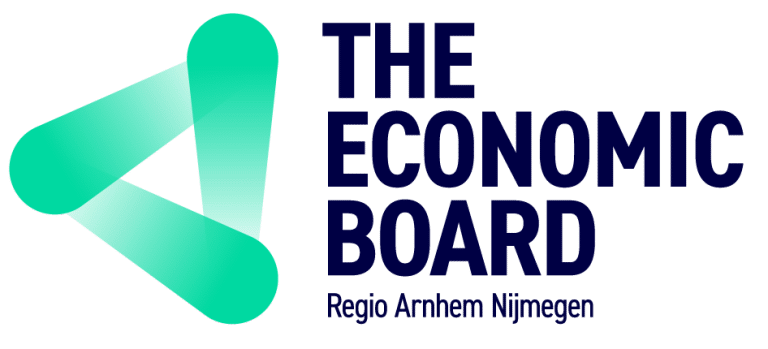
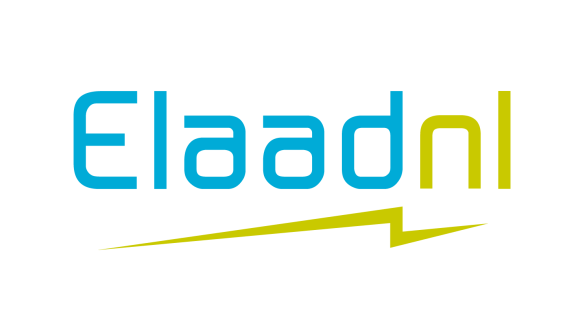
Your organisation?Your organisation?Partner institutions
One programme across seven schools, from MBO to university.
HAN, Radboud University, Van Hall Larenstein, ROC Nijmegen, Aventus, Rijn IJssel and Yuverta. Every lecturer gets the same information, whichever school they teach at.
Current partners
Organisations already bringing challenges.
Alliander and ElaadNL bring real challenges into FyE, together with Gemeente Arnhem and The Economic Board. There is room for more.
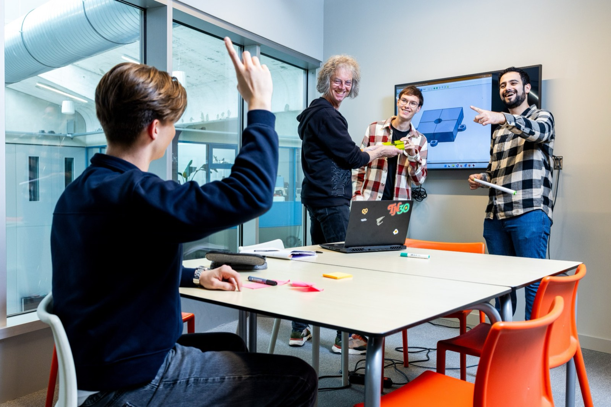
About us · Our story
Creating the energy future together.
The energy transition is one of the biggest challenges of our time. No single person, organisation or field of knowledge can solve it alone. That is where Future (y)our Energy comes in.
Future (y)our Energy (FyE) is a public private partnership connected to HAN. It is a collaborative space where students, lecturers, researchers, professionals and organisations come together to work on real challenges within the energy transition.
Organisations bring real-life challenges to FyE. People from different backgrounds and disciplines explore them together. The goal is not always to immediately find one perfect answer. Sometimes the first step is to understand the problem better, question existing ways of working and discover possibilities nobody had considered.
FyE is also a place where learning happens through experience. Students develop their knowledge, skills and confidence while working alongside lecturers, researchers and professionals.
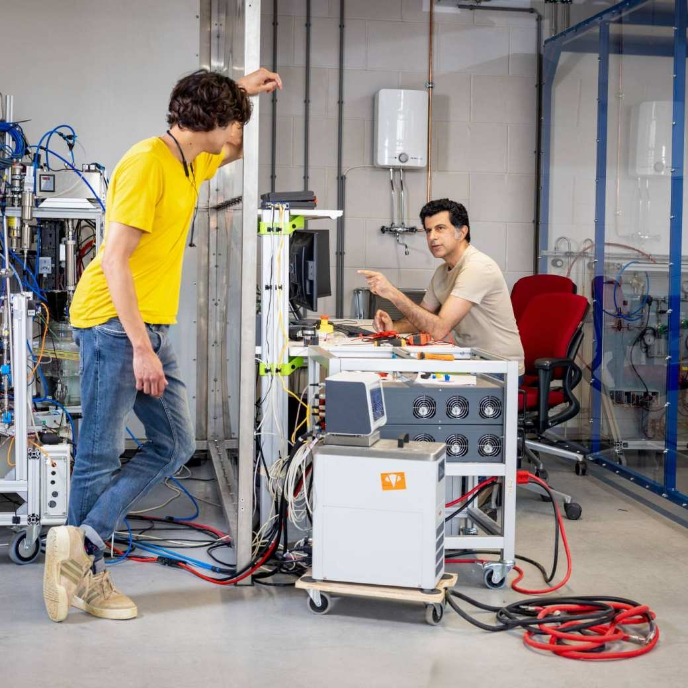
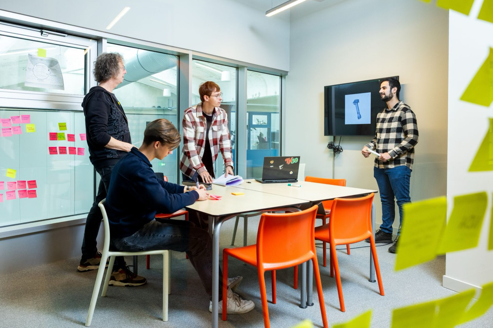
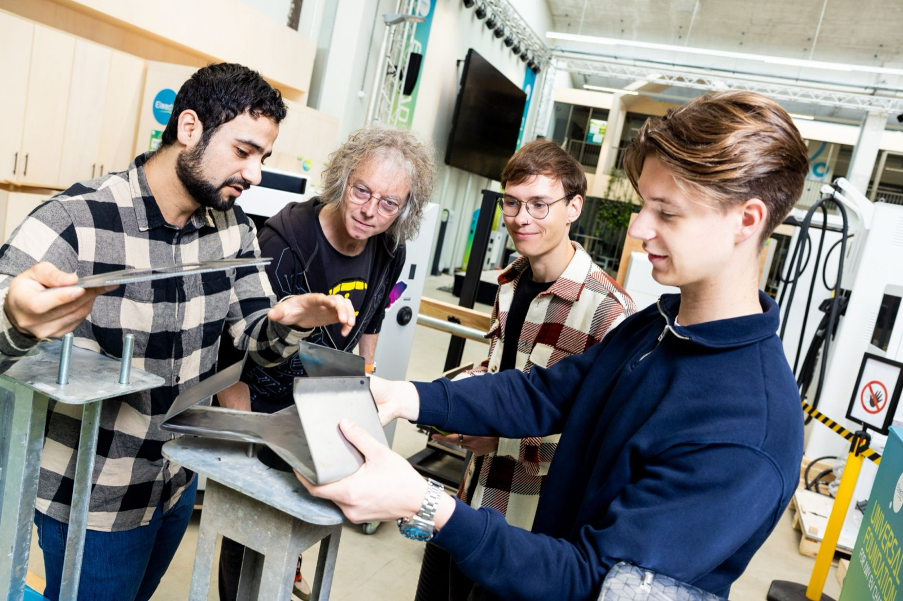
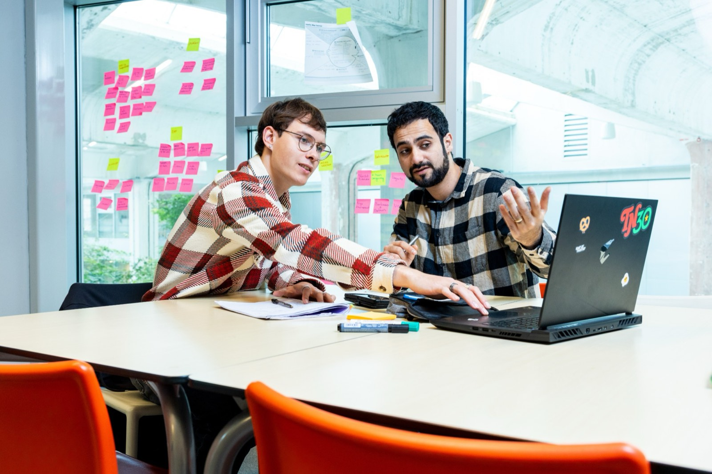
Everyone brings something different
Together, these perspectives create something stronger.
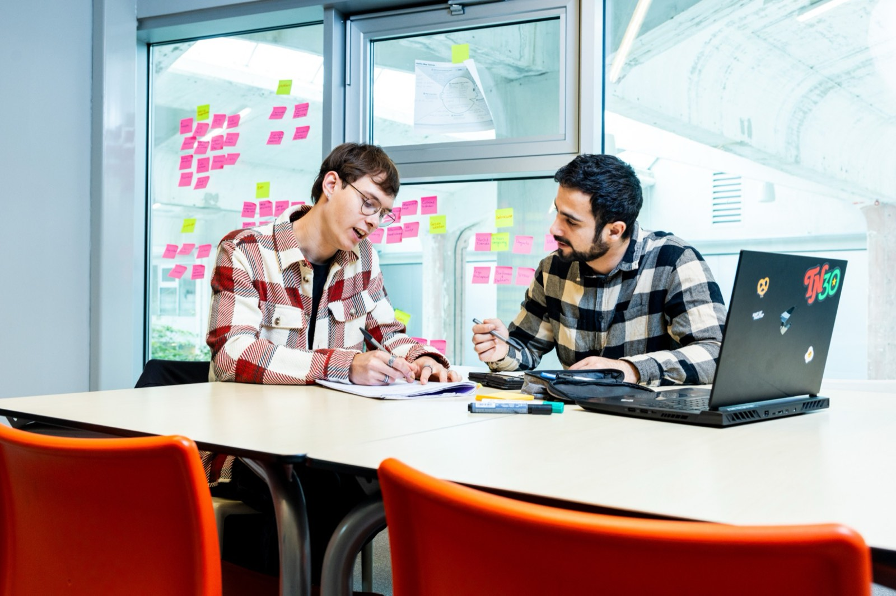
Students bring curiosity and new perspectives. They work on challenges with a real purpose and find out where their knowledge gaps are, and where their learning should start.
What drives us: our mission & vision.
A growing community
Growth means more connections, more knowledge and more impact.
We are building connections between education, research and organisations. Our ambition is to involve more students, lecturers, researchers and organisations in the challenges of the energy transition.
You don't have to have all the answers to be part of FyE.
Mission & vision
Education and practice, working as one.
Why Future (y)our Energy exists, and the future we want to help build.
Connect education with practice, so students learn on real energy challenges.
Collaboration between education and organisations as a natural part of learning.
Our mission
Connect education with practice.
Future (y)our Energy connects students, teachers, educational institutions and organisations to work together on real challenges within the energy transition. FyE brings together different study programmes, educational levels and areas of expertise, creating opportunities for people to learn from each other and approach complex energy challenges from different perspectives.
Our mission is to connect education with practice and create meaningful opportunities for students to apply their knowledge outside the classroom. Through real projects and challenges provided by organisations, students gain practical experience, develop new skills and learn how to work together across disciplines. At the same time, organisations share their knowledge and challenges, receive fresh perspectives from students and connect with potential future talent.
By creating these connections, FyE supports knowledge sharing between education and organisations and helps develop new ways of working and thinking about the energy transition.
Our vision
Collaboration as a natural part of learning and innovation.
Future (y)our Energy envisions a future where education and organisations work closely together to respond to the challenges of the energy transition. The transition requires more than knowledge within individual study programmes or organisations. It requires people from different backgrounds to work together, share knowledge and develop solutions based on real challenges.
Students should have opportunities to work on relevant challenges, gain experience with different disciplines and understand how their knowledge can contribute to society. Organisations should be able to work with education as a valuable partner, bringing real challenges into learning while connecting with new ideas, knowledge and future professionals.
FyE wants to strengthen these connections across institutions and disciplines, and help prepare students and organisations for a changing energy sector: a smarter, more collaborative and sustainable energy future.
How we work.
Working smarter
The energy transition needs more than new technology. We look for faster and better ways of getting things done.
Organising differently
Connecting disciplines and people creates room for ideas that would not happen within one organisation alone.
Designing smarter
A place where people feel comfortable asking questions and challenging existing ideas.
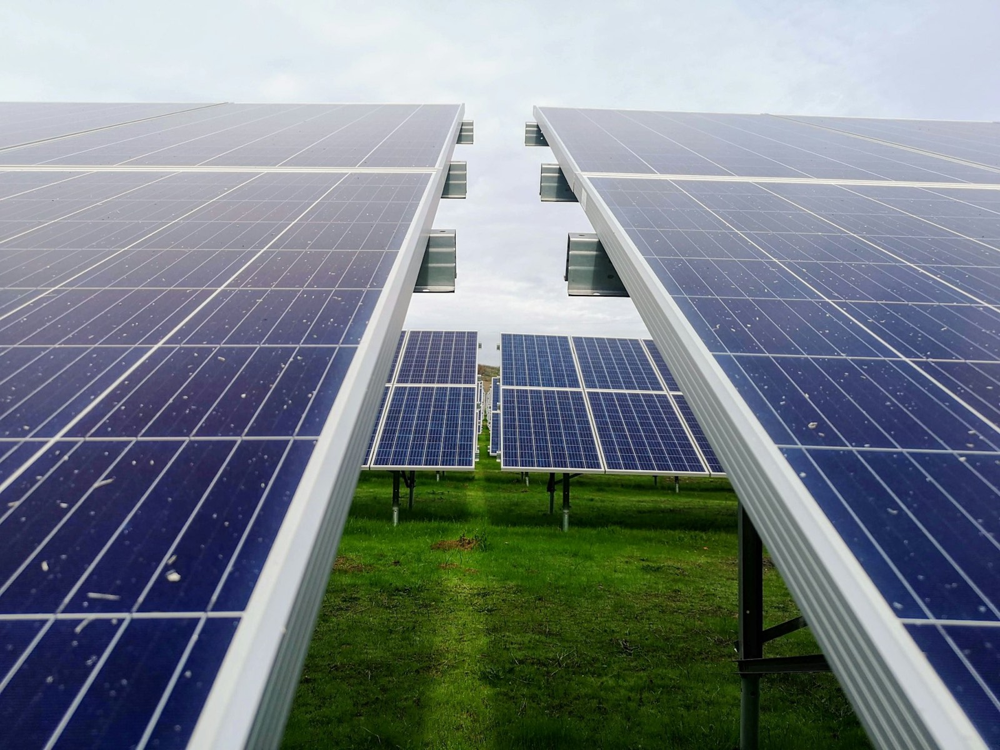
Why FyE?
Because some challenges need us to work together.
- The energy transition needs people who are willing to look beyond the usual way of doing things.
- Students should have the opportunity to work on challenges that have a purpose.
- Organisations can benefit from fresh perspectives and new knowledge.
- Lecturers and researchers can share their expertise while learning from others.
- Some of the biggest challenges of our future require us to work together instead of separately.
Testimonials
In the words of the people involved.
Lecturers and students on what working within Future (y)our Energy is like.
Every day that I've spent in the Future (Y)our Energy environment has been unlike the days I spent before in more regular education.
Researcher and teacher at HAN
Future (Y)our Energy helps you find out what you need to know and then start learning. You get to experience from practice where your knowledge gaps are.
Student testimonial goes here.
There isn't so much a class to prepare. Rather, you're in touch with the students and coaching them on how they tackle the problem.
Student testimonial goes here.
Students are able, especially when they operate in a group, to come up with solutions that people within the company hadn't thought about or hadn't considered.
Students really get a feeling for the energy transition domain. They're working on one part of it, but they get a better idea of what's going on as a whole.
Partner testimonial goes here.
A problem is usually never solved within half a year. Students might be interested in continuing to solve that problem later as part of the company.
For lecturers at all seven partner schools
Help shape the talent of tomorrow.
Real challenges. Your students. Our shared future.
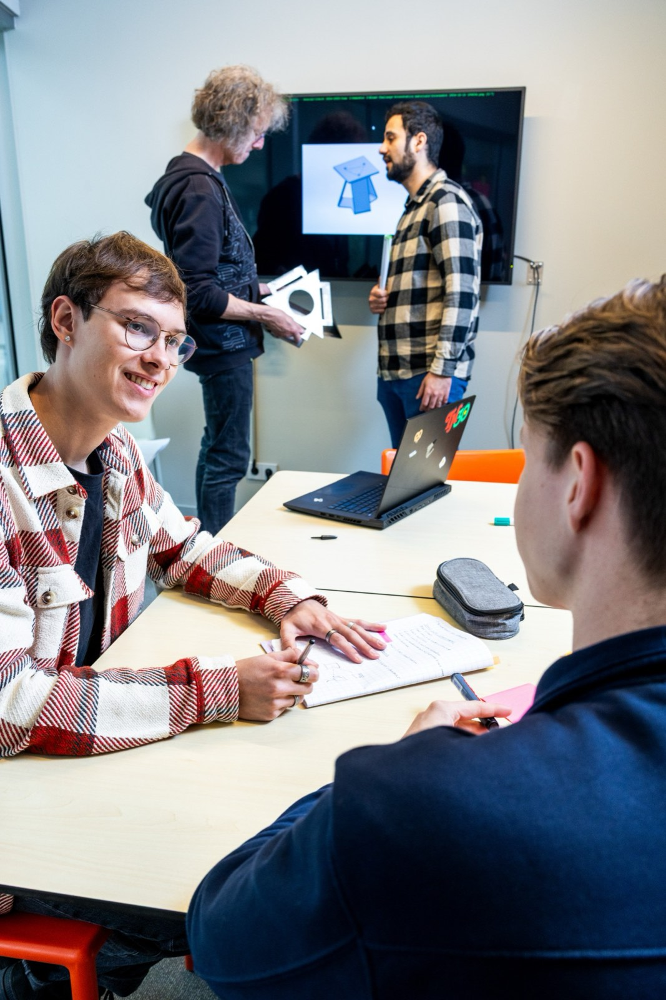
Why your students
You know who's ready for it.
You know who asks the extra question. Who comes up with the unexpected solution. Who would benefit from working with people outside their usual environment.
Within FyE, students work across disciplines and educational levels on real cases brought in by organisations from the energy sector. Along the way they practise skills that are hard to learn from a textbook: communicating across disciplines, working with real stakeholders, dealing with uncertainty and turning ideas into solutions.
What it looks like
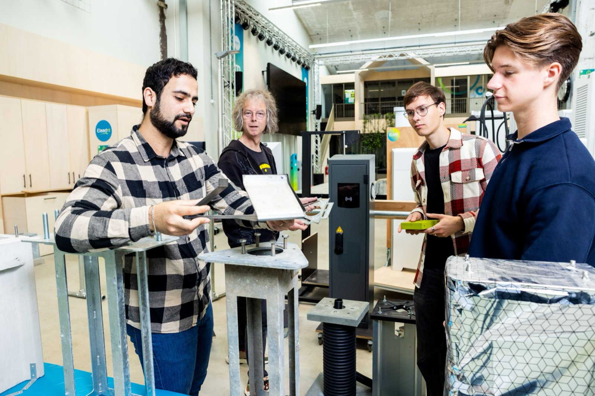
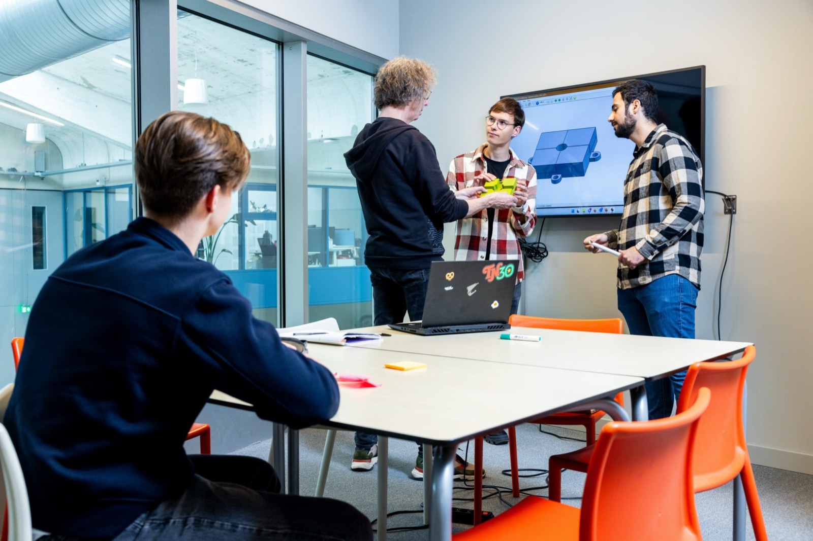
Your role
Less lecturing. More coaching.
Your role is less about preparing a class and more about being in touch with students, helping them work out how to tackle a problem and where to find what they need to know.
For a teacher, the attractive thing is that there isn't so much a class to prepare. Rather, you're in touch with the students and coaching them on how they tackle the problem.
The practical basics
What does this cost me, and how do I get involved?
The same answers for every lecturer, at every partner institution.
Time commitment
Credits & assessment
Fitting it into your course
Support from FyE
FyE brings the challenge, the partner organisation and the team together, so you don't have to organise everything yourself.
What the FyE core team handles for youWho to contact
Use the selector below to find the person at your institution.
Your institution
Where do you teach?
Every partner institution gets its own FyE ambassador: a lecturer who knows the programme and can answer questions peer to peer.
HAN University of Applied Sciences
Ambassador name, role and email for this institutionOr contact the FyE team directly at energietransitie@han.nl
Questions lecturers ask
Good to know.
What do students actually do? +
They work in mixed teams on a challenge an organisation has brought in. That can mean research, talking to stakeholders, visiting companies, building prototypes or writing an advice report, as the ElaadNL team did.
Is it educationally valuable, or just interesting? +
Students learn by finding out where their own knowledge gaps are and then closing them. Working on one part of the energy transition also gives them a better picture of the transition as a whole.
Which students can join? +
FyE brings together MBO, HBO and WO students from different study programmes.
Entry requirements or selection, if anyCan I join as a lecturer from outside HAN? +
Yes. FyE connects lecturers across all seven partner schools, from MBO to university, and you get the same information whichever school you teach at.
Is there an info session? +
For organisations in the energy sector
Do you dare to rethink what's next?
Every organisation has challenges that could use a fresh perspective. Bring yours to a multidisciplinary team of MBO, HBO and WO students.
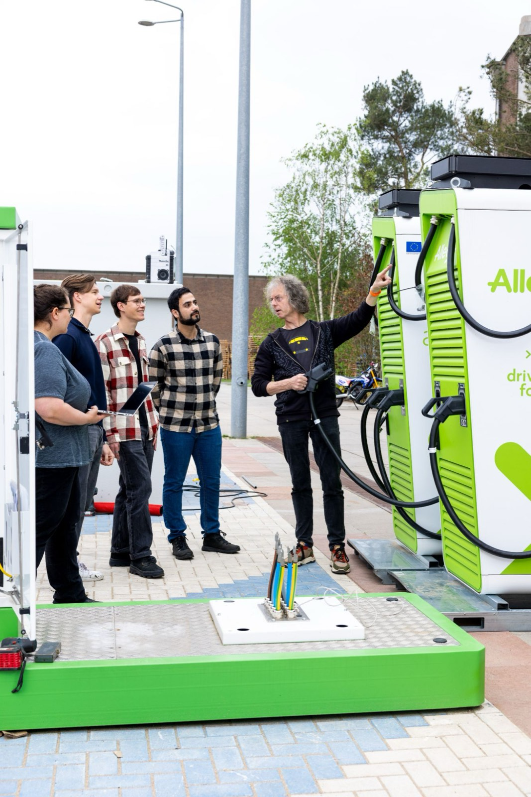
You bring the challenge.
A real question from your organisation, with the constraints and stakeholders that come with it.
They bring fresh perspectives.
Students from different disciplines combine their knowledge and question existing approaches.
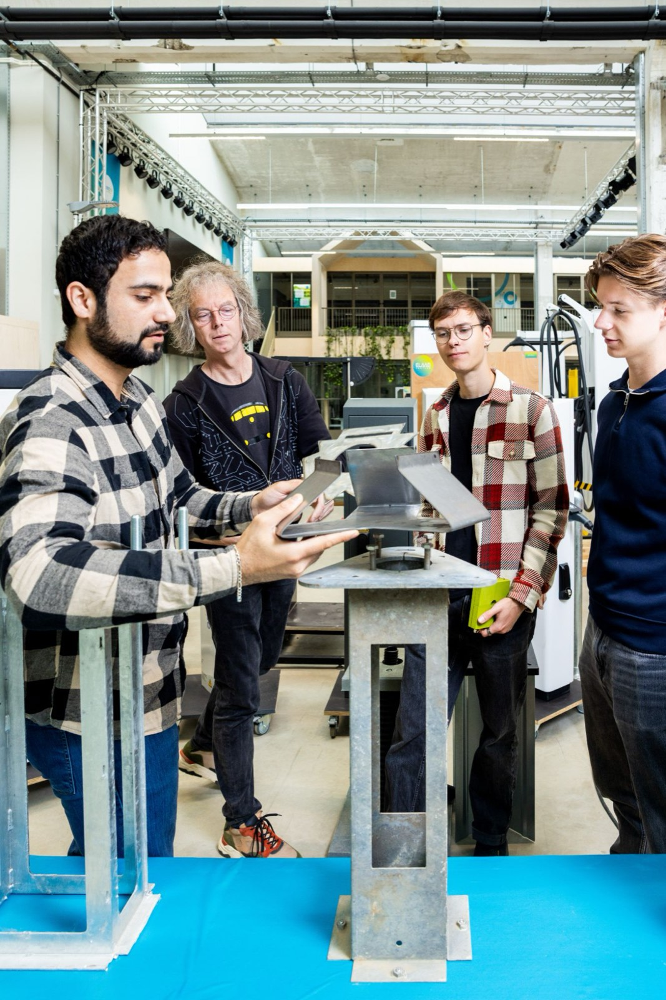
Together, you explore what's next.
Ideas, research and prototypes you might not have considered yet.
What you get out of it
Fresh thinking, extra capacity, future colleagues.
- Fresh perspectives on questions your own team is too close to.
- Extra research and development capacity, as ElaadNL found when building a prototype internally wasn't possible.
- A talent pipeline. Get to know students before they graduate, and introduce them to how your company works.
- Connections with seven schools, from MBO to university.
What kind of challenge?
Pick a topic you're working on.
Challenges don't have to be purely technical. Choose one to see how a FyE team could approach it.
What it asks of you
An investment that pays off.
Collaborating takes some effort from your side: a contact person, time to share knowledge and feedback moments with the team. We keep it focused.
Expected staff time per week / per challenge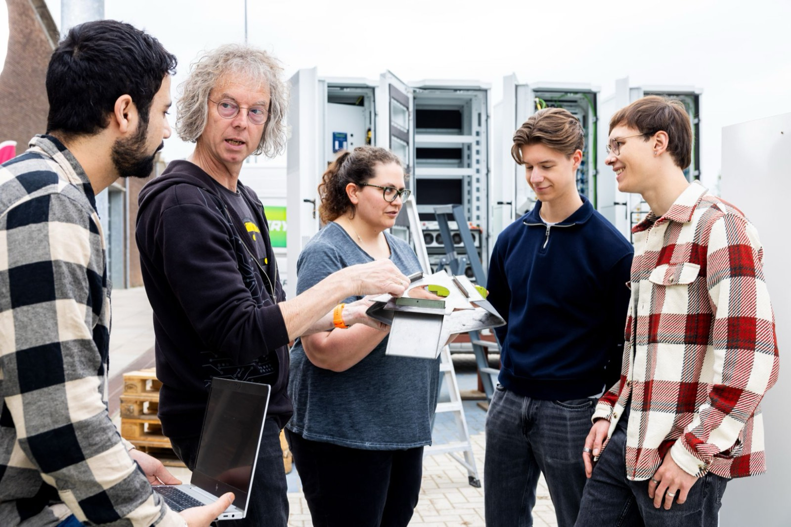
Of course, it takes something from the companies. They have to invest some effort, but I think it pays off.
Ways to work together
Start small, or go all in.
Pilot Challenge
One-semester pilot, not yet confirmed by FyE- One challenge, one semester
- A lower-risk way to see what a student team can do
- A natural step towards a longer partnership
Challenge partnership
- Bring challenges into FyE on a recurring basis
- Build lasting connections with students, lecturers and researchers
- Join organisations like Alliander and ElaadNL
Projects
Real challenges, from real partners.
A challenge from an organisation becomes a starting point for fresh thinking, practical learning and collaboration with emerging talent.
A fresh perspective on neighbourhood energy
How do you make essential energy infrastructure welcome in a neighbourhood?
Read the case →Turning a practical challenge into a working prototype
A charging station needs replacing. Does its foundation have to go too?
Read the case →Case study · Alliander
How do you make essential energy infrastructure welcome in a neighbourhood?
The challenge
More transformer houses are needed. Technical requirements are only part of it.
The energy transition needs more transformer houses in neighbourhoods. But location, appearance and residents' needs all influence how these structures fit into everyday life.
FyE's collaboration with Alliander connects students with energy challenges around Elsweide and the Kenniscampus Arnhem-Velp, including transformer houses. It opens up a broader question: could infrastructure offer something useful to the community as well?
Explore the possibilities
What could a transformer house give back?
Seating areas or e-bike charging points are examples of what students can explore. Switch them on to see the idea.
Seating and e-bike charging come from the case. Greenery and a resident-chosen design are further illustrative examples.
Why it matters
Both the electricity network and the people living alongside it.
Bringing different perspectives together creates space to consider the technical network and the community at the same time.
For companies, this is the opportunity FyE offers: a real challenge becomes a starting point for fresh thinking, practical learning and collaboration with emerging talent.
Outcomes or student results from the Alliander collaborationWhat could a different perspective bring to your challenge?
Case study · ElaadNL
A charging station needs replacing. Does its foundation have to go too?
The challenge
Different manufacturers, different foundations.
Different charging-station manufacturers use different foundations. Replacing a station can therefore mean excavation, a new foundation and a renewed grid connection, even when the original foundation could last much longer.
ElaadNL wanted to develop a standardised foundation that could stay in place. With limited capacity to build a prototype internally, the organisation collaborated with six HAN students.
See the difference
Replacing a charging station.
Today: four steps, even when the old foundation could last much longer.
What the students did
Materials, durability, safety and ease of installation.
The students explored materials, durability, safety and ease of installation. They worked with industry stakeholders, visited companies and developed prototypes supported by an advice report.
Their software-based predictions of long-term performance also helped ElaadNL improve the proposed standard.
Click a photo to enlarge.
The result
Extra development capacity, and insights the team hadn't considered.
The collaboration gave ElaadNL additional development capacity and new insights. Students gained hands-on industry experience while contributing to a design meant to reduce the work involved in future charging-station replacements.
It shows how a focused industry question can become a valuable collaboration between education and business.
Have a challenge that could use fresh thinking and extra research capacity?
Contact
Interested in joining forces with FyE?
Whether you're a teacher, student or company, we'd love to hear from you. Get in touch to explore our projects and opportunities to collaborate.
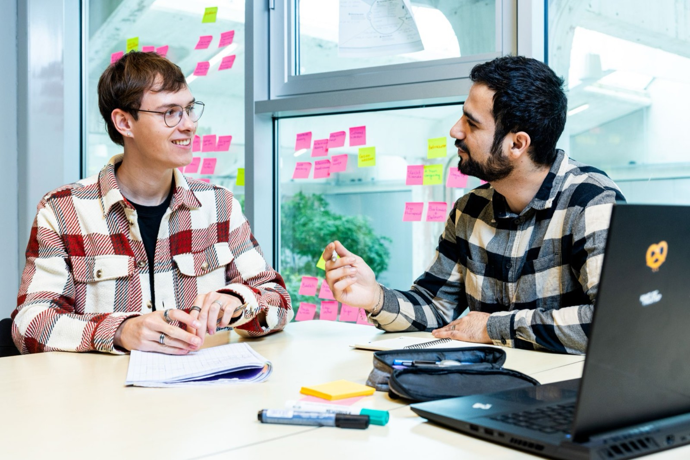